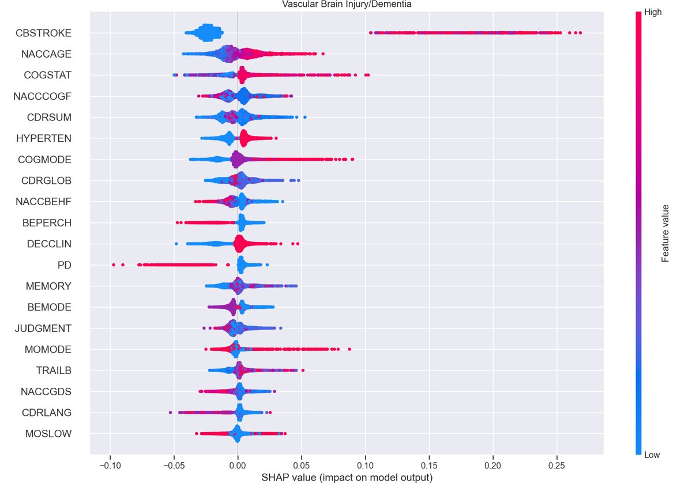
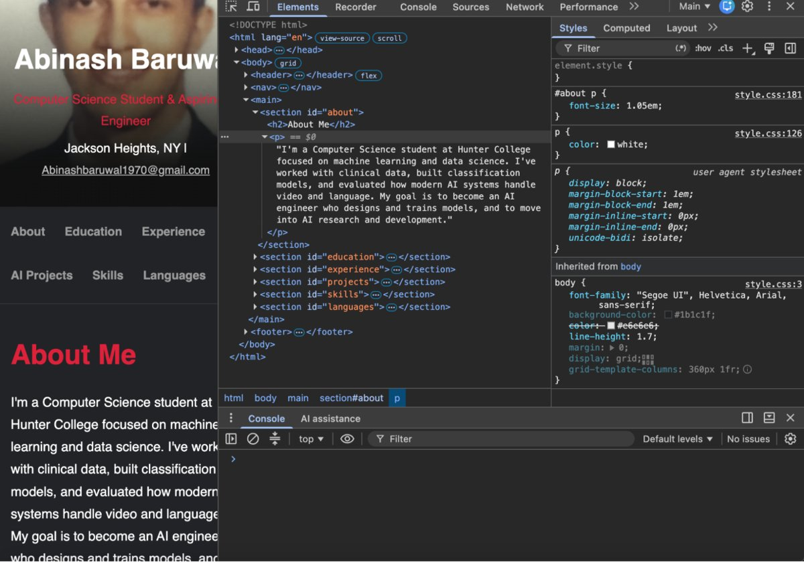

Dementia Type Prediction
A multi-class classification model built with XGBoost on NACC clinical data, reaching 81% accuracy. Feature importance analysis identified protein biomarkers and cognitive assessment scores as the strongest predictors.
Multimodal AI Evaluation
Evaluated vision-language models on video understanding tasks and designed prompt-response pairs for reinforcement learning from human feedback, using rubrics to catch hallucination and timing errors.
Photo by Steve Johnson on Unsplash

Cloud-Native Resume Site
A single-page resume built with semantic HTML5 and custom CSS, version controlled with Git and deployed live through GitHub Pages.